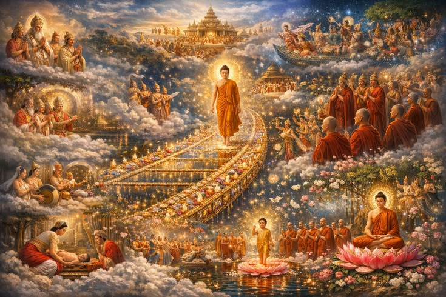
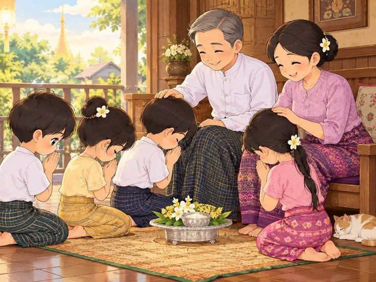
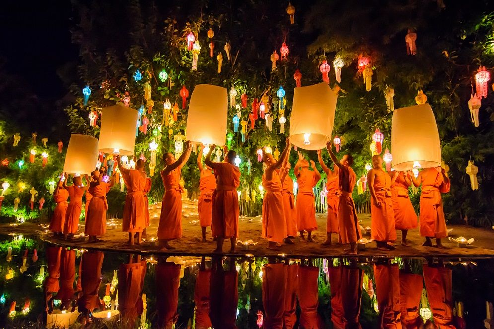

Thadingyut is a traditional festival in Myanmar, also known as the Festival of Lights. It is celebrated during the full moon day of Thadingyut, marking the end of Buddhist Lent. During this festival, people light candles, offer oil lamps and flowers at pagodas, and decorate their homes with colorful lights.
One of the most important traditions is paying respect to parents, grandparents, and teachers. Young people offer gifts, ask for forgiveness, and receive blessings from their elders. People also visit pagodas, donate food and money, and do good deeds to gain merit. Families gather together, share meals, and enjoy the festival.
Thadingyut is a time to show love, gratitude, kindness, and respect. These beautiful traditions bring families closer together and help preserve Myanmar's cultural heritage for future generations.
Explore Gallery

